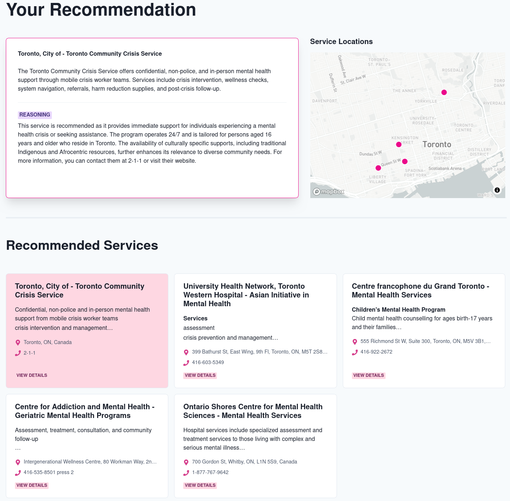

Health Recommendation System¶


Welcome to the Health Recommendation System documentation! This system helps connect people with health and community services using AI-powered recommendations.
🌟 Overview¶
The Health Recommendation System is built with a modern microservices architecture:
| Component | Technology | Purpose |
|---|---|---|
| Frontend | Next.js | User interface |
| Backend | FastAPI | API services |
| Vector Database | ChromaDB | Service data storage |
| AI Engine | OpenAI | Embeddings & recommendations |
This tool is a Minimum Viable Product (MVP) designed for organizations looking to implement AI-powered health or community service recommendation systems. It can be adapted by healthcare providers, social service agencies, community organizations, and government entities who want to connect individuals with appropriate resources based on their specific needs.
The system features an intuitive interface that allows users to: - Search for services using natural language queries - Filter results by location - View detailed information about each service - Refine recommendations based on user feedback
 The main search interface where users can input their needs
The main search interface where users can input their needs
 Search results displaying services with an interactive map
For API documentation, see the API Reference or the local API Documentation.
🚀 Getting started¶
Prerequisites¶
Make sure you have these tools installed:
- Docker & Docker Compose (v20.10.0+)
- Python (3.11+)
- Node.js (18.0.0+)
- uv (0.6.0+)
Note: the project is only tested with python 3.11, and it is recommended to use the same version.
🔑 API keys setup¶
Create a .env.development file in the project root:
# Required Keys
OPENAI_API_KEY=your_openai_key
211_API_KEY=your_211_key
DATA_DIR=/path/to/data
COLLECTION_NAME=your_collection_name
# Optional Frontend Keys
MAPBOX_API_KEY=your_mapbox_key
NEXT_PUBLIC_GOOGLE_MAPS_API_KEY=your_google_maps_key
🛠️ Installation¶
The python development environment can be set up using uv. Hence, make sure it is installed.
-
Clone and setup backend
-
Run pre-commit checks
🏃♂️ Running the services¶
Backend only
UI and Backend
📥 Data setup¶
For a detailed description of the data schema used for the recommendation engine, see Data Schema or the local Data Schema.
Test data¶
If you want to test the system without real data, you can generate some dummy testing data:
This would create a file <path_to_output_dir>/test_data/data-00.json with about 300 dummy services.
You can follow the next step to load this data and embeddings to ChromaDB.
Download service data¶
If you are using the 211 API or Empower's API, make sure you check with them to see if the API keys are configured correctly for the geography of interest. The scripts fetch data from the respective APIs and transforms them to be compatible with the data schema described above.
GTA data (211 API)
python3 scripts/download_211_data.py --api-key $YOUR_211_API_KEY --dataset on --is-gta --data-dir <path_to_data_dir>
Ontario-wide data (211 API)
python3 scripts/download_211_data.py --api-key $YOUR_211_API_KEY --dataset on --data-dir <path_to_data_dir>
Ontario-wide data including Connex data (211 API)
python3 scripts/download_211_data.py --api-key $YOUR_211_API_KEY --dataset 211CX --data-dir <path_to_data_dir>
Download only Connex data (211 API)
Empower API data
python3 scripts/download_empower_data.py --api-key $YOUR_EMPOWER_API_KEY --data-dir <path_to_data_dir>
Upload data and embeddings¶
First we use an interactive container:
docker run -it --network health-rec_app-network -v <path_to_data_dir_with_json_files>:/data -v `pwd`:/workspace -w /workspace vectorinstitute/health-rec:backend-dev-latest bash
source health_rec/.venv/bin/activate
Then we can run the following commands to upload the data to the vector database:
Note: Replace <collection_name> with the name of the collection you want to create. The default collection name specified in the .env.development file is test.
python3 health_rec/manage_data.py create --collection_name <collection_name>
OPENAI_API_KEY=$YOUR_OPENAI_API_KEY python3 health_rec/manage_data.py load --collection_name <collection_name> --resource_name <resource_name> --data_dir /data --load_embeddings
python3 health_rec/manage_data.py list
Remove data¶
To remove specific data entries from a collection:
python3 health_rec/manage_data.py remove --collection_name <collection_name> --data_ids <data_id1> <data_id2> ...
These commands allow you to manage your collections efficiently without the need to reload all data, saving time and resources.
Careful while loading embeddings, it uses the OpenAI API, and hence make sure the data you want to use is correct. Test with a small amount of data first.
Updating Collections¶
If you need to update the collections with new or modified data without reloading everything, you can use the following method:
python3 health_rec/manage_data.py update --collection_name <collection_name> --data_dir /data --load_embeddings
This method will sparsely update the collection based on the IDs of the data entries. If the service is not present in the collection, it will be added. If the service is already present, it will be updated with the new data and embeddings will be generated.
Navigate to the UI on the browser¶
Note that the URL uses https, and hence in the browser you will get a warning about the insecure connection. You can ignore it and proceed.